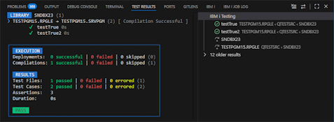
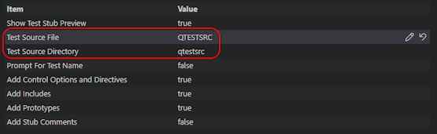

Install the extension from the VS Code marketplace to get started:
Follow the IBM i Testing documentation to learn how to configure the extension:
| Notice: It is essential to properly set the Test Source File and Test Source Directory properties on the preferences page. Otherwise the test cases to not show up in the Test Explorer. |

Parameter XMLTYPE is set to *VSCODE1 by the
IBM i Testing Extension.
